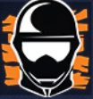

初心者向けページ

新兵の諸君。戦場へようこそ。ここでは初心者がすべき行動、使うべきオペレーターを紹介する。
試合に出るまで
まずはチュートリアルをやろう、このゲームの基礎的なことはそこで教えられる。それが終わったら、射撃訓練場で設定を終えよう。
この後だが、自身があるのならオンラインのモードに行くもよし、対AIモードで練習するのもいい。しかし注意点がある。
まず初心者向けモードの「ニューカマー」、このモードは噂によれば、初心者を虐めたいドMの巣窟らしいので、普通にクイックマッチに行くことをお勧めする。
AIモードは一応練習にはなるが、基本対人ゲームなので、普通のモードの方が練習になる。
あと、マップを学べるモードもあるが、このゲームはマップが多いので、覚えるのにかなり時間がかかる。
試合に出ながらいろいろ学ぼう。
試合中
次に、チュートリアルでは習わない初心者の立ち回りを教える。
攻撃側
ディフューザーを持っているなら落そう。勝利条件の一つだ、動ける味方に渡そう。
味方に付いていこう単独行動は大きなリスクだ、味方をカバーしてあげよう（単独行動が強みのキャラ以外）
死亡後は放置しないカメラを見てピンでサポートするか、人の視点を見ていよう。
防衛側
壁は補強しなくてもいい壁を壊すことで強みが生まれることもある、うまい人から学ぼう。
爆弾部屋にいようもしやられても、敵が来たという情報になる
死亡後は放置しない死んでも諦めてはいけない。
おすすめオペレータ
このゲームのオペレーターは、課金して買うか、ゲームをプレイしてたまる通貨で開放していく形になっていて、すべてのオペレーターを無課金で開けるにはかなりの時間がかかる。なので、使い方が簡単でそれなりに役に立てるオペレーターを紹介しよう。
攻撃側
Striker(ストライカー)最初から開放されているオペレーター。目立ったアビリティがない代わりに、普通のガジェットを２種類持てる。インパクトEMPとハードブリーチングチャージの構成がおすすめ。
 Thatcher(サッチャー)
Thatcher(サッチャー)電子デバイスを止めるEMPグレネードを持っている。割職と呼ばれるハードブリーチャー（Thermite,Ace,Fuze,Hibana等）についていき援護しよう。
 Blackbeard(ブラックビアード)
Blackbeard(ブラックビアード)ゲーム内で唯一盾を構えながらARが使える、やわらかい壁なら壊せるので、敵陣に奇襲する戦法がいい。ただし、盾を過信しすぎないように。
Iana(イアナ)Ianaそっくりのデコイをだせる。これは操作可能で、使用回数も実質無限（インターバルあり）。撃った相手をスキャンしたり、目くらましはできないが、マップや敵、罠の配置がわからなくて怖い初心者には非常に心強い。
防衛側
Sentry(セントリー)最初から開放されているオペレーター。目立ったアビリティがない代わりに、普通のガジェットを２種類持てる。感知アラームとニトロセルの構成がおすすめ。ニトロセルで味方を殺さないように。
 Rook(ルーク)
Rook(ルーク)味方全員がつけれるアーマープレートを設置できる。体力増加に自己蘇生を付与できるし、やることは準備開始後にすぐ設置するだけなので、初心者には超オススメ。武器も強い。（故にかなりとられやすい）
Mute(ミュート)敵の電子デバイスを無効化できるデバイスを設置できる。主要の部屋の入口において、敵のドローンを止めたり、補強壁の破壊を阻害したり、結構いろんなアビリティのアンチになる。Rookと同じく、置くだけで簡単だ。
Kaid(カイード)設置物から円状にビリビリをだせる。このビリビリは、補強壁、有刺鉄線、展開シールドなど、範囲内であれば数に制限なくビリビリになる。主に壁などにつければOK
これらは本当に最序盤におすすめのキャラで、理解ができてこればもっといろんなキャラを使ってみよう。正直最初は何使っても死ぬだろうから、コツは
自分がやられて嫌なことを相手にもしよう
最後に
正直ここ見るよりもっといいサイトはいっぱいある。このサイトは自分がよくお世話になってる
サイトを模倣したものなので、みんなもぜひそっちを見てくれるといい。